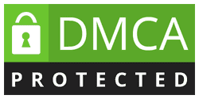
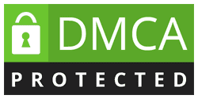

Immediate Edge ofrece a la gente de a pie un enfoque sencillo para operar en el mercado de criptodivisas de rápido crecimiento. Le pondremos en contacto con un corredor de comercio de criptomonedas en su país que le ayudará a acceder a datos de mercado en profundidad, robots de comercio, numerosos activos y apoyo continuo.
Immediate Edge Registro
 

Descargo de responsabilidad: Immediate Edge es una herramienta de software que conecta a los operadores con corredores financieros, que ofrecen servicios para operar con criptodivisas, Forex, CFD, acciones y otros activos. Todas las formas de inversión financiera y de especulación en el mercado conllevan un riesgo y pueden provocar pérdidas monetarias. Por esta razón, no es aconsejable invertir dinero que no pueda permitirse perder. Investigue siempre adecuadamente, calcule los riesgos y planifique su presupuesto en consecuencia. Además, nuestro software recomienda corredores de forma aleatoria según el acuerdo con nuestros socios. Lleve a cabo su debida diligencia e investigue el corredor que le asignamos para asegurarse de que sus servicios cumplen todas las normas y reglamentos.
Immediate Edge está diseñado para ayudarte a acceder al creciente mercado del Bitcoin y las divisas digitales.
Gracias a la última tecnología, casi cualquier persona, sin importar su educación, formación o nivel de ingresos, puede beneficiarse potencialmente de las muchas oportunidades que ofrece el mercado de las criptomonedas.
¿Qué ventajas tiene? Transacciones rápidas, retiradas transparentes, ausencia de comisiones ocultas, igualdad de acceso a las oportunidades de inversión y mucho más. Incluso los no bancarizados, que representan 1.700 millones de personas en todo el mundo (según el último Índice Financiero Global), podrían beneficiarse de las tecnologías de criptomoneda y blockchain.
¡Y nosotros estamos aquí para acelerar estos cambios! Nuestro bien diseñado portal ayuda a los comerciantes de todo el mundo a acercarse a alcanzar su máximo potencial intentando utilizar la volatilidad del mercado de criptomonedas en su beneficio. Sin embargo, no podemos garantizarle un éxito seguro, ya que la habilidad y la suerte están involucradas. Los mercados se mueven rápidamente, pero gracias a las herramientas de nuestros socios, usted puede estar en mejor posición para seguir el ritmo.
Miles de personas utilizan Immediate Edge para acceder al mercado de criptomonedas. Tú puedes ser el siguiente! Regístrate en el formulario y descubre lo que Immediate Edge puede hacer por ti!
Socios de confianza:
A diferencia de otras plataformas de negociación, Immediate Edge es fácil de usar para los principiantes, fiable y segura. ¡Y podrá obtener sus primeros resultados en cuestión de minutos! Estará conectado con uno de los corredores más populares de su zona que estará disponible las 24 horas del día para ayudarle con cualquier pregunta que pueda tener.
Nuestros socios ofrecen tendencias, parámetros de trading, copy trading, datos históricos y más, con un depósito mínimo de sólo 250EUR. ¿Suena bien, verdad?
Resultados rápidos:
Immediate Edge encuentra las mejores oportunidades para ti en el acto. Porque el mercado cambia rápidamente y la velocidad importa. Creemos que AHORA es el momento adecuado para entrar en el mercado.
Piénsalo. Los bancos han bajado sus tipos de interés. Grandes empresas como Tesla, Apple, Google o Facebook ya han invertido en blockchain. Miles, millones de personas han entrado en el mercado de las monedas digitales. ¿Por qué perder más tiempo?
Libertad financiera:
Con Immediate Edge podrás acceder a los mercados del futuro. Toma control de tu experiencia de trading y utiliza la tecnología de nuestros socios para alcanzar tu máximo potencial. Compra o vende Bitcoin y otras criptomonedas como Ethereum, Litecoin, Cardano, Stellar y Chainlink a golpe de clic. Infórmate sobre el trading con apalancado, los CPD, los spreads y otros términos y conviértete en un profesional.
El mercado de Bitcoin nos acerca a los mercados del futuro, y con Immediate Edge podrás entrar en este ecosistema futurista. Ya ha cambiado el futuro de muchos, tú puedes ser el siguiente!
Sistema fácil de usar:
Immediate Edge ofrece un enfoque personalizado de inversión. Nuestra misión es ayudar a todo el mundo a entrar al mercado de criptomonedas, incluso si no estás familiarizado con el funcionamiento de la industria. Immediate Edge te conecta con un software fácil de usar en cualquier dispositivo.
Es seguro, y puedes financiar tu cuenta con distintas divisas. La mayoría de los brokers con los que trabajamos ofrecen varios métodos de pago y un sencillo sistema de retirada.
Herramientas avanzadas:
Después de abrir tu cuenta podrás utilizar un avanzado software de trading de criptomonedas para comprar y vender Bitcoin y otras altcoins. Por eso nace Immediate Edge: para dar a todo el mundo la oportunidad de acceder a los mercados del futuro.
El mercado de Bitcoin está lleno de potencial, incluso para los nuevos inversores. Con herramientas adecuadas, conocimientos y astucia, hay oportunidades de obtener beneficios. Immediate Edge es una plataforma para que saques partido de la volatilidad del mercado de criptomonedas, con herramientas automatizadas de trading.
Oportunidades lucrativas:
En Immediate Edge probamos el mercado y utilizamos un sistema integral que conecta a los operadores con los corredores que están activos a nivel mundial. Como se ha explicado anteriormente, podrás operar con una variedad de criptodivisas como Bitcoin, Ethereum, Litecoin, Cardano, Stellar, Chainlink y muchas otras con un solo clic.
Pero también puedes operar con activos regulares como el oro y la plata, y divisas regulares como el USD, la GBP, el EUR o docenas más. Tú decides!
Apoyo continuo:
Los brokers te proporcionarán una plataforma de trading automatizado de fiar para operar a la velocidad de la luz. Además, un asesor profesional de la empresa del broker te llamará para explicarte todo en un lenguaje sencillo y comprensible.
Aprenderá con precisión sus sistemas, precios, riesgos, consejos y trucos. Por ejemplo, podrá implementar un sistema de stop-loss que podría limitar su exposición a grandes pérdidas. Empezar nunca ha sido tan fácil.
Introduzca sus datos en el formulario de registro de arriba y podrá empezar a operar en cuestión de horas. El registro es totalmente gratuito.
Su información se enviará directamente a los corredores de su país. Te llamarán casi de inmediato para asegurarse de que empieces cuanto antes.
Deposita en tu cuenta un depósito mínimo y accede al software de trading que proporciona tu broker personal.
Comienza ya a operar con criptomonedas. Rápido, fiable, seguro y fácil de usar para principiantes.
Regístrate ya y consigue resultados en unas horas!
Aunque no podemos garantizar beneficios, te animamos a unirte ya porque estas oportunidades se presentan una vez en la vida.
Shervin Pishevar, fundador de Hyperloop One and Sherpa Capital, afirma que bitcoin alcanzará 100.000$ en 2022.
Thomas Fitzpatrick, CEO de Citibank, cree que bitcoin alcanzará 318.000$ en 2022.
Los hermanos Winkelvoss, que ganaron millones invirtiendo de forma temprana en Bitcoin, afirman que es el nuevo oro, y que llegará un día a los 500.000$.
Tai Lopez, un experto en marketing que inunda YouTube con anuncios, pronostica que bitcoin superará este año los 60.000$.
Entra al mercado de criptomonedas antes de que estalle la burbuja!
Es fiable y seguro, y puede financiar su cuenta con numerosas divisas. La mayoría de los corredores con los que trabajamos ofrecen múltiples métodos de pago, incluido un sencillo sistema de retirada de fondos.
Estos brokers te llamarán cuando te hayas registrado para explicarte sus servicios en detalle. Cuando lo tengas claro, podrás empezar a operar con ellos. El depósito mínimo inicial es de 250 EUR.
Antes de invertir, ten en cuenta que no es dinero gratis. Todas las operaciones conllevan un riesgo y pueden no ser adecuadas para ti. Haz tu propia investigación y asegúrate de entender lo que estás haciendo. No inviertas más de lo que puedas permitirte perder y contacta con un profesional autorizado si tienes dudas.
Immediate Edge explora el mercado de las criptomonedas para conectarte con el mejor BROKER de tu país.
Los traders expertos pueden utilizar Immediate Edge para acceder a herramientas avanzadas. La mayoría de los brokers con los que trabajamos permiten utilizar CPD con apalancamiento. Son productos complejos que pueden aumentar tus beneficios. Utiliza estas herramientas sólo cuando tengas la suficiente experiencia. Operar con apalancamiento podría resultar en la pérdida de todo tu capital.
Nuestra plataforma es fácil de usar para principiantes, solo tienes que introducir tus datos. Tu información se envía a un agente que te ofrecerá servicios para operar. Estos servicios pueden ser lucrativos, pero también son arriesgados ante la volatilidad del mercado. Nunca inviertas más de lo que te puedes permitir perder. Si no estás seguro de qué hacer, consulta con un asesor profesional antes de operar. La mayoría de principiantes pierden su dinero con herramientas complejas como CPD, bots y herramientas de automatización. Infórmate de los riesgos de este tipo de trading.
No podemos dar consejos sobre inversiones. Pero en general, los expertos creen que es buena idea invertir una pequeña parte de tu dinero en criptomonedas como Bitcoin, entre un 2% y un 8% de tus ahorros. Sobre todo ahora que los bancos están bajando los tipos de interés. Dicho esto, las criptomonedas y el apalancamiento financiero conllevan un alto riesgo. Es fácil perder toda tu inversión. Invierte SOLO lo que puedas permitirte perder. Asegúrate de que no es tu única fuente de ingresos, y no hagas nada que no entiendas del todo.
Immediate Edge es accesible en dispositivos de escritorio y móviles.
No tienes que pagar por usar Immediate Edge. Nos pagan nuestros socios afiliados. Estos brokers cobran comisión de tus operaciones. Por lo general, se trata de diferenciales.
Immediate Edge usa protección SSL para mantener tus datos seguros. Tu privacidad importa!
Sí, la mayoría de brokers permiten operar con muchas de las monedas principales de CoinMarketCap, como Ethereum, Cardano, XRP, Polkadot, Litecoin, Chainlink y muchas más.
Después de registrarte en la plataforma Immediate Edge, no tendrás que utilizarla más. Esta plataforma solo te conecta con brokers, así que no es necesario utilizarla. Pero antes de empezar a operar, es buena idea informarte. Lee, aprende y practica. Prueba con una cuenta demo. Aprende cómo funciona el mercado y desarrolla tu estrategia para operar.
La mayoría de brokers con los que trabajamos aceptan una variedad de métodos de pago, como Visa, MasterCard, PayPal y más. Asegúrate de conocer la legislación vigente sobre criptomonedas en tu país antes de utilizar los servicios de cualquier broker.
Los beneficios que puedes obtener dependen de muchos factores, como experiencia, habilidades, conocimientos, oportunidades, cantidad invertida, circunstancias del mercado y suerte. El rendimiento pasado no es garantía de éxito. Recuerda que te arriesgas a perder toda tu inversión.
×
×
×